Snapchat wanted to help its small business owner audience set up and utilize a business account on the platform to generate leads, engage audiences, and drive sales. It had an existing online interactive course for this, but the content was outdated and needed a refresh.
As a freelance content strategist and copywriter working with the agency Beyond, I worked with the Director of Product Delivery and other team members to enhance existing copy and generate new copy for this online course.
This included creating a new course outline and writing clear, concise steps for each course, with multiple chapters in each course. The content consisted of instructional copy, quizzes, case studies, and calls to action.
The revised course was much more user friendly and catered to a wider range of users with entertaining, informative, and engaging content.
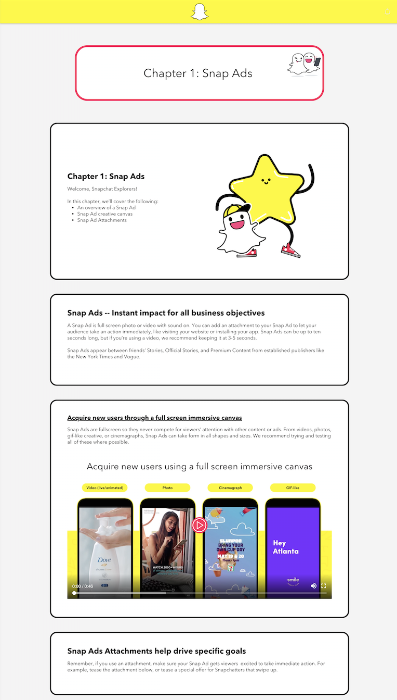
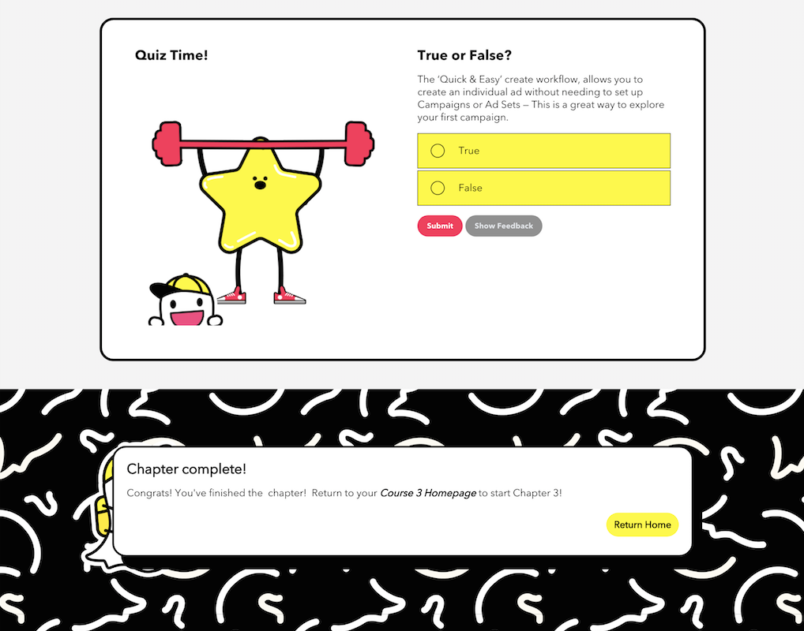
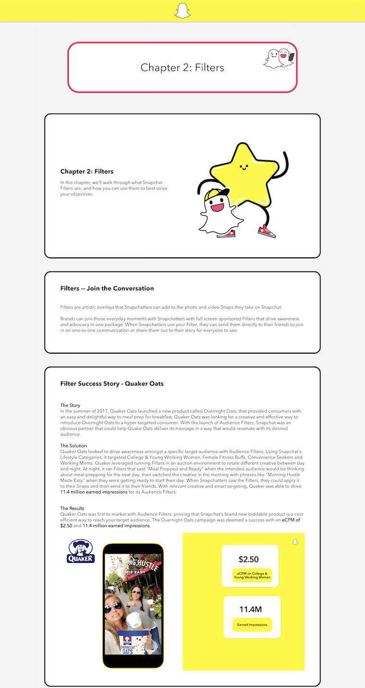
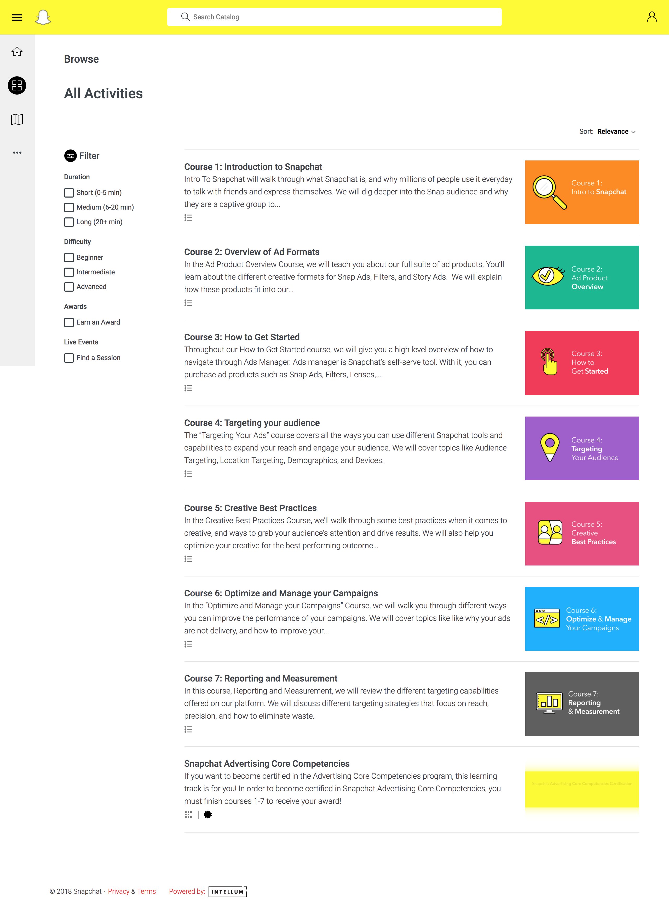
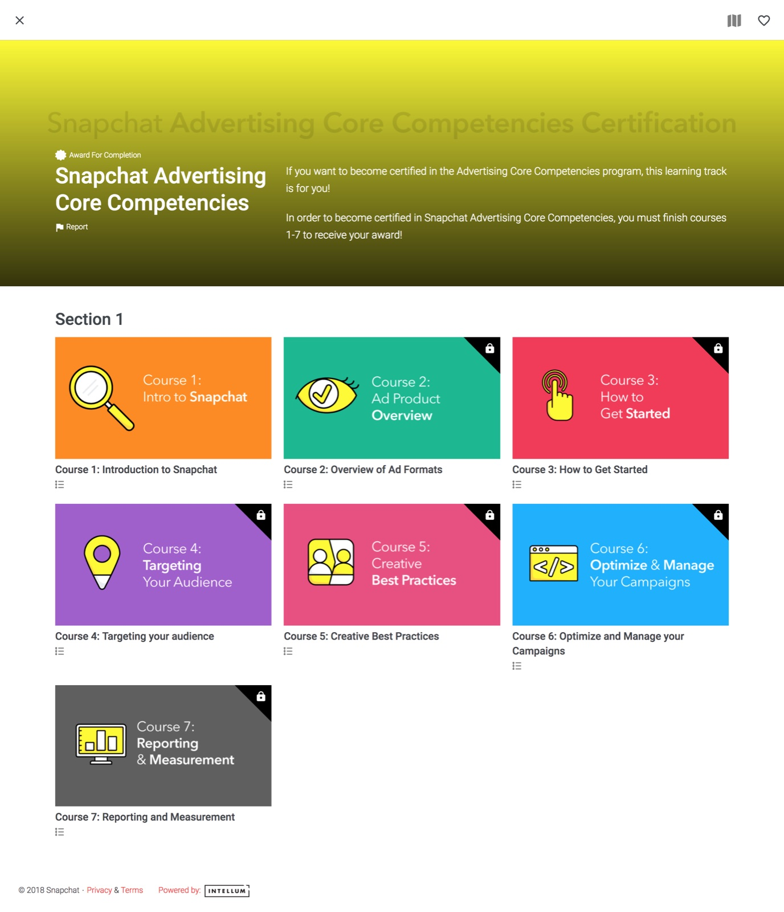
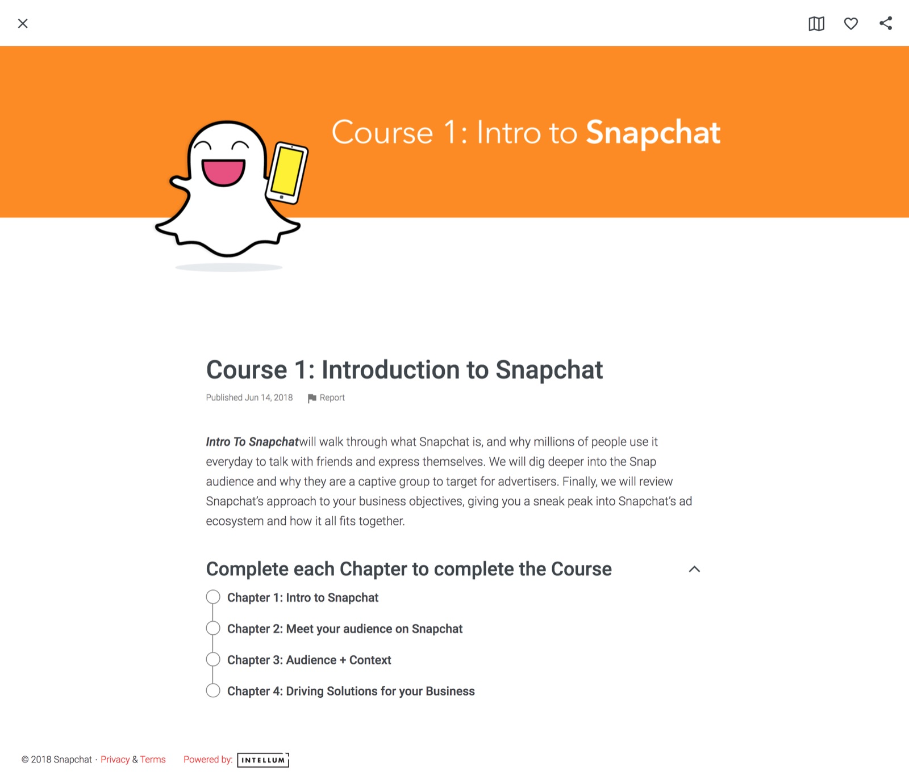
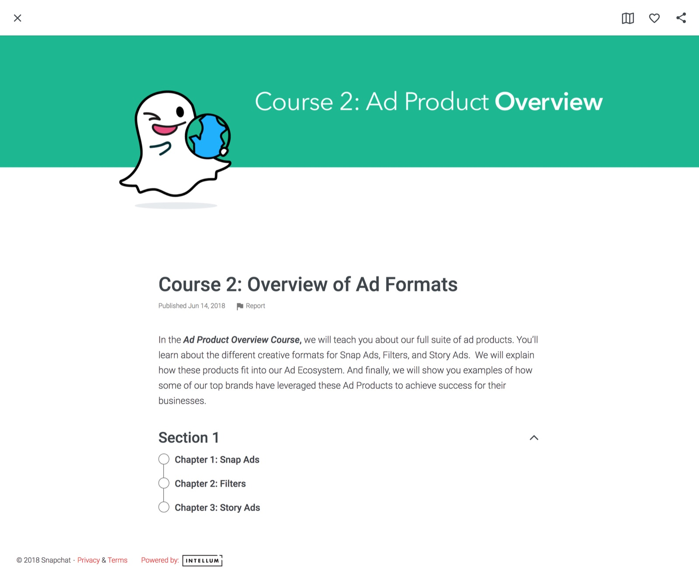
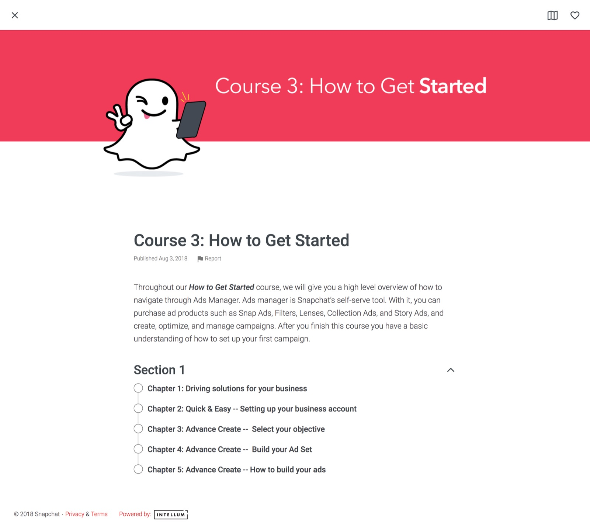
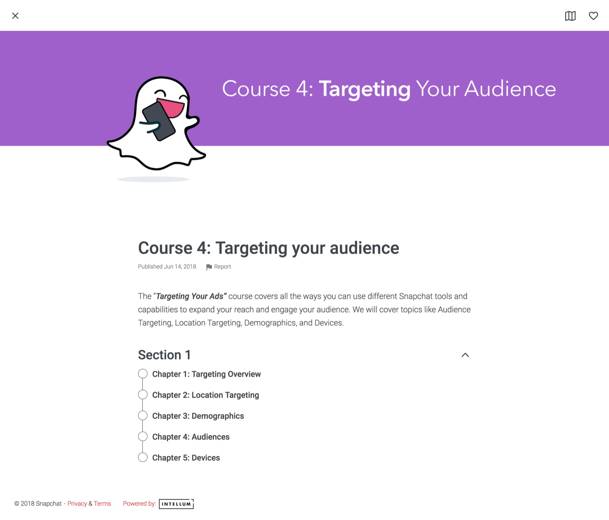
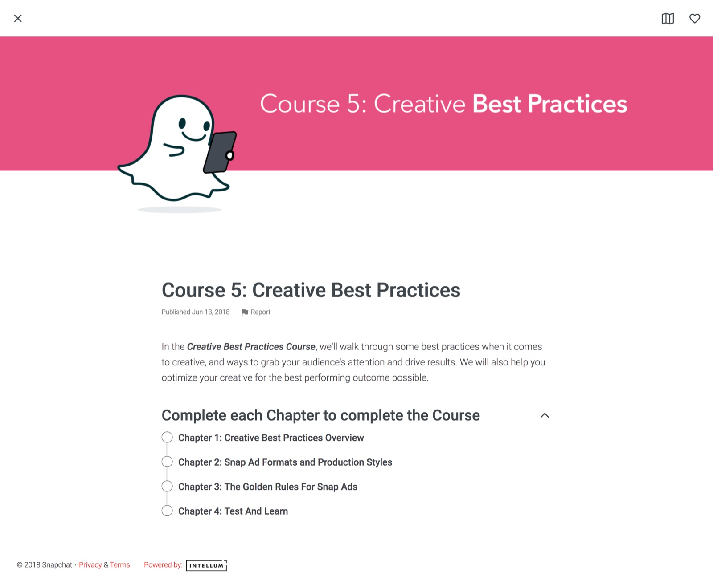
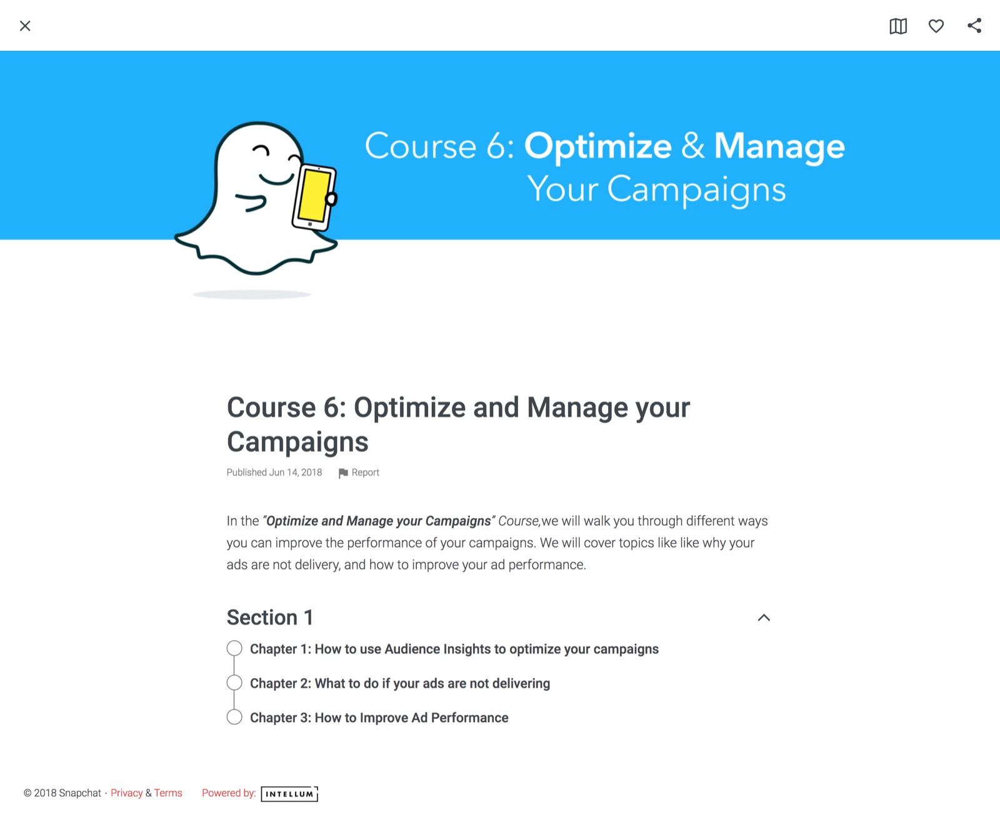
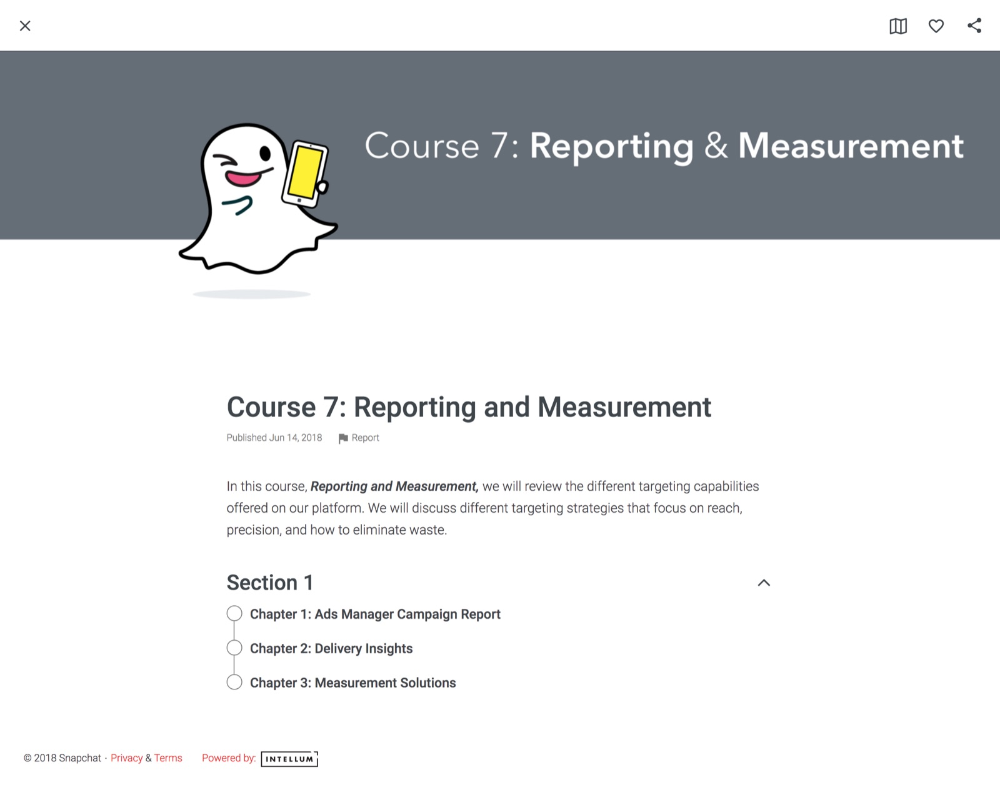